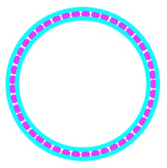

<!DOCTYPE HTML PUBLIC "-//W3C//DTD HTML 4.01 Transitional//EN" "http://www.w3.org/TR/html4/loose.dtd">

<html>
<head>
<meta http-equiv="Content-Type" content="text/html; charset=UTF-8" />
<title>クラスの継承</title>
<link rel="stylesheet" href="common.css" type="text/css" />
<link rel="stylesheet" href="style.css" type="text/css" />
</head>

<body>
<div id="main">

<h1>クラスの継承</h1>
  
<h2>クラスの継承</h2>  
  <p>例として、色付きで描画される円のクラス(ColorCircle.h)を作成する。  </p>
  <h3>色付き描画円のクラス： </h3>
<u>ヘッダファイル（ColorCircle.h）：単体版</u>
<pre class="SourceCode">
<code>class ColorCircle {
private: // 非公開
    int x, y, rad; // 中心座標と半径
    std::string color; // 描画色（標準ライブラリの文字列）

public: // 公開
    ColorCircle (); // 構築子
    ColorCircle (int cx, int cy, int r, std::string c); // 違う形式の構築子

    void setPosition (int x, int y);
    void setRadius (int rad);
    int getRadius ();
    void draw (svg* svgObj);
    void setColor (std::string); // 色の設定
};</code>
</pre>

<p>
上記のクラス ColorCircle は、前回のクラスCircleと共通部分が多い。
ゆえに、これらのクラスは Circle クラスの性質（メンバ変数と関数）を<b class="innerCaution">継承</b>する
ものとして、以下の様に再設計できる。</p>

<u>ヘッダファイル（ColorCircle.h）：継承版</u>
<pre class="SourceCode">
<code>#include "Circle.h"

class ColorCircle : public Circle {
private:
    std::string color; // 描画色
public:
    ColorCircle (); // 構築子
    ColorCircle (int cx, int cy, int r, std::string c); // 違う形式の構築子

    void draw (svg* svgObj); // Circle クラスの draw () を上書き（オーバーライド）する
    void setColor (std::string c); // 色の設定
};</code>
</pre>

<p>基本クラス Circle のメンバ関数 draw (svg* svgObj) は継承クラスで新たに定義されているが、これは<b class="innerCaution">オーバーライド</b>と呼ばれる。<br>
関数の本体は、以下の様に設計される。
</p>
<u>関数本体（ColorCircle.cpp）</u>
<pre class="SourceCode">
<code>#include "ColorCircle.h"

ColorCircle::ColorCircle () : Circle () { // 構築子
    color = "black";
}

ColorCircle::ColorCircle (int cx, int cy, int r, std::string c) : Circle (cx, cy, r) { // 属性を指定する構築子
     color = c;
}

void ColorCircle::draw (svg* svgObj) { // Circle クラスの draw () を上書き（オーバーライド）する
    svgObj->drawCircle(x, y, rad, color);
} 

void ColorCircle::setColor (std::string c) { // 色の設定
    color = c;
}</code>
</pre>

ただし、svg クラスの描画関数を以下の様に拡張する。<br><br>
<u>svg.h 内の変更</u>
    <pre class="SourceCode"><code>void drawCircle(int x, int y, int rad, <b class="innerCaution">std::string color = "black"</b>); // 円を色付きで描画する</code></pre>

<u>svg.cpp 内の変更</u>
<pre class="SourceCode">
<code>void svg::drawCircle(int x, int y, int rad, <b class="innerCaution">std::string color</b>) {
    ofs &lt;&lt; "&lt;circle cx='" &lt;&lt; x &lt;&lt; "' cy='" &lt;&lt; y &lt;&lt; "' r='" &lt;&lt; rad &lt;&lt; <b class="innerCaution">"' fill='" &lt;&lt; color &lt;&lt; "'/&gt;"</b>;
    ofs &lt;&lt; std::endl; // 改行
}
</code></pre>
<p>上記の ColorCircle では、draw 関数が基本クラスの x, y, rad の値を使用しているが、これらは private で
宣言されているために参照できない（コンパイル時にエラーとなる！）。
したがって、派生クラス ColorCircle にはこの<span class="innerCaution">基本クラスのメンバ変数 x, y, rad を公開する必要</span>がある。
これには、Circleクラスの宣言 (Circle.h) において、</p>

<pre class="SourceCode"><code>#pragma once
#include &lt;iostream&gt;

class Circle {

<span class="innerCaution">protected:</span> // 以後のメンバ変数を派生クラスにだけ公開する
	int x, y; // 中心座標：メンバ変数
	int rad; // 半径：メンバ変数
public:
    Circle ();
    Circle (int cx, int cy, int r = 10);
    void setPosition (int x, int y);
    void setRadius (int rad);
    int getRadius ();
    void draw (svg* svgObj);
};</code>
</pre>
<p>の様に、private 宣言を protected に書き換える。さらに，ColorCircle のプライベート変数 <span class="innerCaution">std::string color; も，以後の拡張を考慮してアクセス指定子を protected にする</span>．</p>
<p class="innerCaution">
ヘッダファイル間は互いに参照し合っていると、２度同じファイルが読み込まれてコンパイル時の警告やエラーのメッセージが出力される事があるので、２度の読み込みを抑止することをコンパイラに通知するオプションである　#pragma once　をヘッダファイルの冒頭に付けている（<b>今後は、全てのヘッダファイルに対して必ず付けるようにする</b>！）。</p>

<h3>ポイント（クラスの継承）：</h3>
  <ul class="Point">
    <li>ColorCircle クラスは Circle クラスから見て 派生クラス（子クラス、サブクラス）と呼ばれ、Circle クラスは　ColorCircle クラスから見て基本クラス（親クラス、スーパークラス）と呼ばれる。</li>
    <li>クラス宣言の最初の class ColorCircle : public Circle { で、キーワードの public を省略すると private での継承となるので、注意が必要！</li>
      <ul>
        <li>継承における public と private との違い
          <ul>
            <li>public: 基本クラスの private は参照できないが、public は参照できる。</li>
            <li>private: 基本クラスのメンバは、全て参照できない。 </li>
          </ul>
        </li>
      </ul>
  <li>派生クラスの構築子を作成するときには、関数宣言の直後に「：基本クラスの構築子呼び出し」を付け加える（ただし、引数を渡さない場合は、省略できる）。
  <pre>
    例：
    ColorCircle () : Circle () { color = "black"; }; // ColorCircle () { color = "black"; }; でも可！
</pre></li>
  <li>基本クラスの構築子が複数ある場合には、そのどれを呼び出しても構わないが、引数の受け渡し方を間違わないように注意する必要がある。実行時には、基本クラスの構築子 → 派生クラスの構築子（上記例では { color = "black"; } の部分）の順番で呼び出される。    </li>
  <li>消滅子に関しては、基本クラスの消滅子呼び出しを付け加える必要は無い（渡すべき引数がないので）。    </li>
  <li>消滅子は構築子とは逆の順番で、派生クラスの消滅子 → 基本クラスの消滅子　の順番で呼び出される。</li>
  <li>メンバ関数 draw () は基本クラス Circle と派生クラス ColorCircle の双方で定義されているが、
    この場合のメンバ関数は、変数の実体（インスタンス）を生成した時のクラスの関数が呼び出される。これは、メンバ関数の上書き(オーバーライド)と呼ばれる。
    </li>
</ul>
<br/>

<h3>練習問題：</h3>
<p>
以下のプログラムが正常にコンパイルされる様に基本クラス Circle のアクセス指定子を変更し（private → protected）、実行してその出力を確認する。

<pre class="SourceCode">
<code>#include "svg.h"
#include "ColorCircle.h"

int main () {
    svg svgObj; // SVGドキュメントを生成するオブジェクト

    Circle circ(100,100,50);
    ColorCircle c_circ(100,200,80,"red");

    svgObj.open("colorCircle.html", 640, 400);
    c_circ.draw (&amp;svgObj);
    circ.draw (&amp;svgObj);

    return (1);
}</code>
</pre>
<br>
<h2>多重継承</h2>
<p>あるクラスに複数のクラスを親クラスとして持たせ，その性質を継承させる事ができる。</p>
<p>多重継承はいくつかの問題点を含んで
いるので、Ｃ＃やJavaでは形式を限定した多重継承のみを許している（Javaの場合は、interface と呼ばれるクラスに対して多重継承が許される）。</p>

<h3>問題点１：重複するメンバ関数をオーバーライドする場合</h3>
<pre class="SourceCode">
<code>class CBase1 {
    public:
        void func();
    };
    
    class CBase2 {
    public:
        void func();
    };
    
    class CSub : public CBase1, public CBase2 {
    };</code>
</pre>
<p>このとき、</p>
<pre class="SourceCode">
<code>CSub* sub = new CSub();
    sub->func();</code>
</pre>
<p>とした場合、sub->func();が、CBase1::func() と CBase2::func() の：どちらを呼び出すのか判断できないので、コンパイルエラーになる。</p>

<h3>問題点２：同じ親クラスを複数継承する場合</h3>
<pre class="SourceCode">
<code>class CBase {...内容省略...};
    class CMiddle1 : public CBase {...内容省略...};
    class CMiddle2 : public CBase {...内容省略...};
    class CSub : public CMiddle1, public CMiddle2 {...内容省略...};</code>
</pre>
<p>とした場合、CSubクラスからCBaseクラスのメンバをアクセスする際に、どちらの CBase を指しているのか分からないためエラーになる。</p>

<p>上記の問題点を含む多重継承の場合は、親クラスの構成を再検討する事が望まれる。</p>

<br/>

<h2>Exercise (No.3)</h2>
<div class="Exercise">
<p>
Implement LineCircle that draws the colored contour of a circle by inheriting ColorCircle class.
Using this LineCircle class, extends the program made on the last exercise as follows:</p>
<ol>
<li>Add color on the circles arranged along a ring with ColorCircle class, and draw two circles that contact with inner and outer sides of arranged circles with LineCircle class, as shown in the figure below.</li>
<li>In launching program, the number of arranged circles, the colors used for ColorCircle and LineCircle, and the line width of LineCircle are given as
<pre class="CommandLine"><code>% ./a.out 8 blue red 3</code></pre>
</li>
</ol>
 <br>
Example of 8 circles（line width == 3） Example of 45 circles (line width == 6）
<br>
 
</p>
</div>

<h2>提出課題 (その3)</h2>
<div class="Exercise">
<p>
クラス ColorCircle を継承して、色付きの円の輪郭線を描画するクラス LineCircle を実装する。 また、この LineCircle クラスを用いて、前回の課題で作成したプログラムを拡張し、</p>
<ol>
   <li>前回の提出課題で作成した環状に配置される円に色を付け、並べた円の内側と外側に接する円を、色付きの LineCircle で描画する（生成例を参照する）。</li>
    <li>以下の様に、プログラム実行時に円の個数に加えて、ColorCircle と LineCircle の色、および LineCircle の線幅を引数として与える。
        <pre class="CommandLine"><code>% ./a.out 8 blue red 3</code></pre>
    </li>
</ol>
 <br>
８個の円の生成例（線幅３） ４５個の円の生成例（線幅６）
<br>
</div>
<br>
<hr>
<h3>課題作成のヒント(Hint for exercise)：</h3>
<ul>
<li>main 関数は以下の様に作成する (sample code of main function)
<pre class="SourceCode">
<code>#include "LineCircle.h"

int main (int argc, char* argv[]) {
    svg svgObj; // Object for generating SVG document
    int numCircles, width; // 円の個数と半径  
    std::string color1, color2; // 円の描画色（配置／環状円）
    ColorCircle **c_circles; // 配置円
    LineCircle *l_circles[2]; // 環状円
    
    if (argc &lt; 4) {
        std::cout &lt;&lt; "Lack of Arguments !";
        return 0;
    }
    numCircles = atoi(argv[1]);
    color1 = argv[2];
    color2 = argv[3];
    width = atoi(argv[4]);
   
    /*
    ここに、描画機能を実装する (Implement draw function here)
    */

    return (1);
}</code>
</pre></li>
<li>svg の draw 関数は、以下の様に拡張する (extension of draw function in svg)
<br>
<u>svg.h 内の変更</u>

<pre class="SourceCode">
<code>void drawCircle(int x, int y, int rad, std::string color="black", <b class="innerCaution">int width=0</b>);</code></pre>

<u>svg.cpp 内の変更 (modification of svg.cpp)</u>
<pre class="SourceCode"><code>void svg::drawCircle(int x, int y, int rad, std::string color, <b class="innerCaution">int width</b>) {
    if (width > 0) // 線幅が指定されていれば輪郭線を描画する (draw only contour for non-zero width)
        ofs &lt;&lt;  "&lt;circle cx='" &lt;&lt; x &lt;&lt; "' cy='" &lt;&lt; y &lt;&lt; "' r='" &lt;&lt; rad
        &lt;&lt; "' stroke='" &lt;&lt; color &lt;&lt; <b class="innerCaution">"' stroke-width='" &lt;&lt; width &lt;&lt; "' fill='none' /&gt;"</b>;
    else // 線幅が指定されていないか、値が0以下であれば、円の内部を塗りつぶす (fill inside circle) 
        ofs &lt;&lt;  "&lt;circle cx='" &lt;&lt; x &lt;&lt; "' cy='" &lt;&lt; y &lt;&lt; "' r='" &lt;&lt; rad
        &lt;&lt; "' fill='" &lt;&lt; color &lt;&lt; "' /&gt;";
    ofs &lt;&lt; std::endl; // 改行
}
</code></pre>
    
</li>
<li>LineCircle.h にはその基本クラスのヘッダファイルを含める (include a header file of the base class)
<pre class="SourceCode">
#include "ColorCircle.h"
</pre>
</li>
<li>LineCircle には、線幅を表すメンバ変数を追加し、その変数に値を設定するためのメンバ関数も追加する
(add a member variable for the width of contour and member function for setting its value) </li>
<li>コンパイル作業の一例 (example of compilation sequence)
<pre class="CommandLine">
g++ -std=c++11 -c svg.cpp
g++ -c Circle.cpp
g++ -c ColorCircle.cpp
g++ -c LineCircle.cpp
g++ main.cpp LineCircle.o ColorCircle.o Circle.o svg.o</pre>
</li>
</ul>

<p class="Caution">
前回の演習と同様に、svg.cpp をコンパイルする際には -std=c++11 オプションが必要である！
</p>

<br><br>
<h2>捕捉：Makefile の活用【<a href="http://lagendra.s.kanazawa-u.ac.jp/ogurisu/manuals/make-intro/index.html">make と Makefile の説明例へのリンク</a>】</h2>
<p>
複数のファイルのコンパイル作業をバッチ処理させるには make 命令用いる。
これは、ターミナルウインドウで
<pre class="CommandLine">
make
</pre>
と入力すれば良い。ただし、この機能を使用するのは、Makefile という名前のテキストファイルを作成しておき、ソースファイルと同じフォルダに置く必要がある。
</p>
<h4>サフィックスルール+マクロを使用したMakefileの雛形：</h4>
<pre class="SourceCode"><code># マクロ定義部
CC = g++
 
# 必要なオブジェクトファイルを列挙する（必要な.c ファイルの拡張子を.oに変える Ｃ言語の場合は、gcc を利用する）
OBJS = main.o Circle.o ColorCircle.o LineCircle.o svg.o

# 生成規則部（実行ファイル名を circle としている）$@ → "circle", $(CC) → "g++ と置き換わる。
circle: $(OBJS)
	$(CC) -o $@ $(OBJS)

.cpp.o: # 使用する拡張子が異なる（.c, .c++等）場合には，修正する
	$(CC) -std=c++11 -c $&lt;

all:
	${MAKE} circle

clean:
	rm $(OBJS)
</code></pre>
<p>
プログラムに新たなソースファイル(.cpp)を追加する場合は、OBJS = の部分に名前を追加する
（<b class="innerCaution">ただし、拡張子は .c ではなく、オブジェクトファイルの .o に設定する点に注意！</b>）
<br />
コンパイルが原因不明のエラーを出力する場合は、全てのファイルを更新したものとして、再コンパイルするとエラーが消える場合がある。全てのファイルを再コンパイルするには、オブジエクトファイル (*.o) を全て消せば良いが、そのためには以下の命令を用いれば良い。
<br>The following command removes all object files (*.o)
</p>
<pre class="CommandLine">
make clean
</pre>
</div>
</body>
</html>
